Du har sikkert allerede prøvet det. ChatGPT, SkoleGPT, Copilot eller en anden chatbot kan skrive tekster, svare på spørgsmål og lave billeder. Det kaldes generativ AI, fordi den genererer, altså skaber, nyt indhold ud fra det, du skriver til den. Det, du skriver, kaldes et prompt.
Den er ikke intelligent på samme måde som et menneske. Den har lært af enorme mængder tekst og gætter, ord for ord, hvad der statistisk giver mening som svar. Det er derfor, den nogle gange lyder helt sikker på noget, der faktisk er forkert.
ChatGPT alene behandler over 2,5 milliarder beskeder om dagen (TechCrunch, 2025). Det er altså ikke noget, kun du og din klasse bruger. Men det gør den ikke automatisk til et godt værktøj i alle situationer. Det handler om, hvornår og hvordan du bruger den.
- Similarweb, TechCrunch med flere. Genbrugt fra kapitel 1, AI-kørekort for undervisere (statistik om ChatGPT-brug).